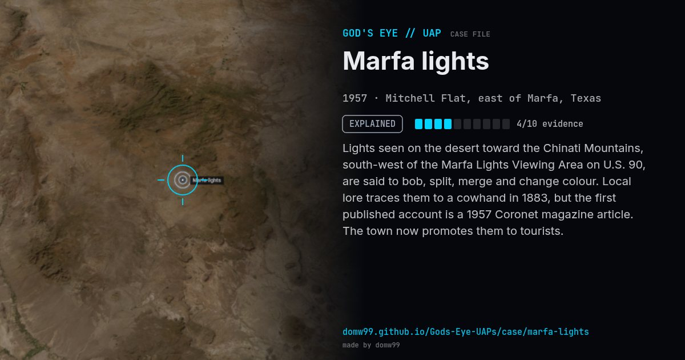

Marfa lights
EXPLAINED

Lights seen on the desert toward the Chinati Mountains, south-west of the Marfa Lights Viewing Area on U.S. 90, are said to bob, split, merge and change colour. Local lore traces them to a cowhand in 1883, but the first published account is a 1957 Coronet magazine article. The town now promotes them to tourists.
Explanation
Observers from the University of Texas at Dallas (2004) and a study over 2000–2008 concluded that most lights are car headlights on U.S. 67, distorted by layers of warm and cool desert air, along with ranch lights and campfires.
What was seen
Shape: Glowing orbs that split, merge and drift
Witnesses: Visitors to the viewing area, nightly
Duration: Recurring
Browse
- United States
- 1950s
- Explained
- Recurring lights
- Many independent witnesses
- Photographs
- Video footage
- Lights and fireballs
- Spheres and orbs